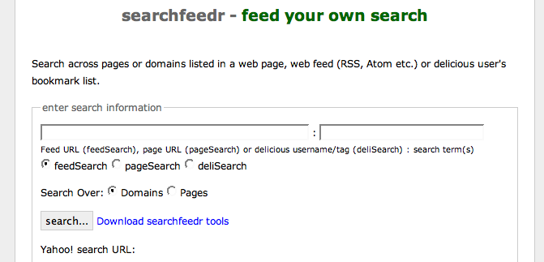

September 29, 2006
searchfeedr, pageSearch and deliSearch Combined Interface
To try and simplify matters with my various feed limited searches, I've pulled together a combined interface that allows users to enter the limit source (a web feed URL, a page URL, or a delicious username/tag combination) into one text box, and the search terms into another:

I've also posted a Greasemonkey script and bookmarklet that will add a searchfeedr box to delicious user tag pages, Wink user collections, Technorati tag pages and H20 playlist pages, with more to come, including a straightforward 'search the links on this page' tool.
In the meantine, here are three links demonstrating the URL API to searchfeedr+:
feedSearch over domains from an H20 Playlist RSS feed:

pageSearch of a OUseful blog post over pages


Slowly, slowly, the pieces come together...it's just a shame I have so many other side projects on the go...
Next stop is to integrate the xoxotools running on Ning into the searchfeedr app directly, along with the pagescraping tools. Then I'll be able to accept whatever in the search limit text box without the need for the feedSearch/pageSearch/deliSearch selction buttons - a quick parse of the limit string, and a test of the header of the page if the limit specifies a URL (to see if the page is (x)html - a web page - or xml - a web feed) - should provide enough of a signal to invoke the appropriate tool automatically :-)
Posted by ajh59 at September 29, 2006 11:09 PM